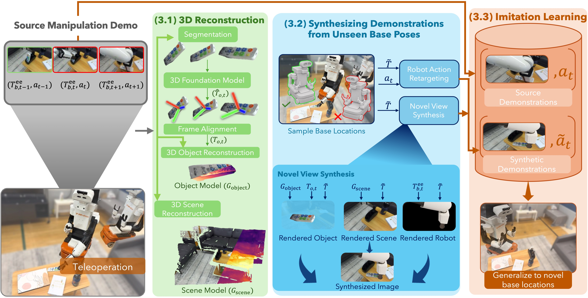
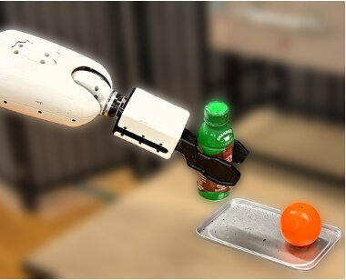
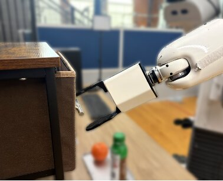
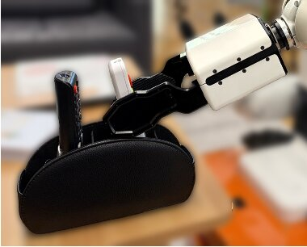
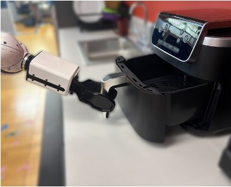

MoMaSplat
Dynamic Novel-View Demonstration Augmentation for Mobile Manipulation
The University of Texas at Austin *Project lead · †Principal investigator
CoRL 2026 Workshop · G2A: From Generative Models to Robot ActionsBackground: Pick-Place Bottle demonstrations generated by MoMaSplat from unseen base poses.
Overview
New viewpoints for the whole demonstration, contact included.
A mobile robot rarely parks exactly where its demonstrations were recorded. Its camera moves with the base, so every new parking spot is a viewpoint the policy never saw, and visuomotor policies are highly sensitive to that shift.
Prior novel-view synthesis methods assume static scenes, so they cannot re-render the manipulated object during contact. MoMaSplat reconstructs the static scene and the manipulated object as separate 3D Gaussian splats, then re-renders complete demonstrations, with transformed actions, from base poses that were never recorded.
- 5real-world tasks, rigid and articulated objects
- 3real scenes: desk, living room, kitchen
- >25 cmfrom the demo poses, still succeeds where all baselines fail
01 How it works
From one recording to a robot parked somewhere new.
Follow one real Pick-Place Bottle demonstration through the pipeline. Click a chapter to jump to it.
-
A teleoperated demonstration recorded on the real robot from its original base pose.
-
The static scene and the bottle are reconstructed as separate Gaussian splats, so each can be re-rendered on its own.
-
Scene, moving bottle and a rendered robot are composited from a base pose that was never recorded.
-
Repeat for many sampled base poses. Each one yields a full synthetic demonstration with its own transformed actions, and together they form the training set.
-
The real robot runs a policy trained on the original and generated demonstrations, from a new base pose.
The pipeline, step by step
Each step zooms to the part of the method figure it describes.

-
The whole pipeline
MoMaSplat turns a few real demonstrations into many synthetic ones seen from new base poses, then trains a policy on both.
-
Start from a source demo
A teleoperated demonstration: a sequence of camera frames, end-effector poses Teeb,t, and actions at, along with navigation data of the scene.
-
Segment and track the object
Camera poses come from structure-from-motion. The manipulated object is segmented, a feed-forward 3D foundation model estimates its per-frame pose, and a Sim(3) transformation aligns the object and scene reference frames.
-
Two separate 3D models
A 3D Gaussian Splatting model of the static scene, Gscene, and a separate model of the object, Gobject, which can be moved along its recorded trajectory.
-
Sample a new base pose
A base pose T̃ is sampled around the original demonstration poses. The source end-effector trajectory is transformed into the new base frame, giving retargeted actions.
-
Render and composite
The scene and object are rendered from the new viewpoint, the robot is rendered from a simulator, and the three streams are composited into a photorealistic novel observation.
-
Train on everything
Paired with the transformed actions ã0:H, each rendered sequence is a synthetic demonstration. The policy is trained on the union of source and generated demonstrations.
02 Reconstructions
Grab a scene and orbit it.
The static scene and the manipulated object are reconstructed as separate Gaussian splats, which can be rendered from arbitrary viewpoints.
Manipulated objects
Two rendered views of each object model.
Generated demonstrations
Many unseen base poses per task, each with its own transformed actions. Click to enlarge.
03 Results
Robust to base poses it never saw.
Across five real-world tasks in three scenes, MoMaSplat substantially improves robustness to unseen base poses, succeeding beyond 25 cm where all baselines fail.




Real-world rollouts
Evaluation rollouts on the real robot. Hover a clip to bring it forward, click to open it larger.